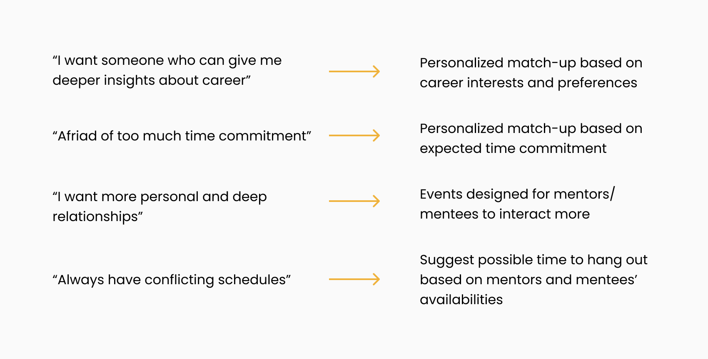

Google Design Challenge
Overview: This is a case study I did as a part of Google’s recruiting process. The prompt was to design an experience that allows mentors and mentees to discover each other and help new students adjust to campus life.
Role: Individual Project (UX Design, UX Research, Visual Design)
Tool Kits: Figma, InVision
Timeline: ~1 week
Outcome: passed the design challenge 🎉
00. Project Summary
Problem
New students want to connect and establish long-term personal relationship with experienced students to better navigate college life. A lot of new students struggle about matching up with random mentors and end up not keeping in touch with mentors.
How might we create an experience to connect best-fit students and enhance long-term mentorship?
Solution
A mentorship program with mobile app that:
- matches mentee with mentors based on mutual interests and personal preference
- provides event exploration to encourage hangouts and recommend bonding events
- suggests personal invitations to resolve time conflicts and build long-term relationship
01. Research
Understanding the problem
In order to understand new students’ needs for a mentor and experienced students’ thoughts, I sent out a preliminary survey asking students at Cornell about their journey to find a mentor /mentee. I collected 35 responses and conducted ~5 in person interviews to learn users’ needs and design goals.
Competitive research
i. How current new students get connected with a mentor?
At the beginning of the school year, I always received tons of emails from school organizations asking students to sign up for mentorships. School orgs and clubs reach out to students with the same major and send out a Google form asking for personal preference. Then you will be assigned a mentor / mentee. However, it’s a blind date and not everyone can get the mentor that best fits them.
ii. How mentors and mentees stay connected?
At school, many clubs and orgs publish their events and invite students on Facebook Event page. However, Facebook Event thread is overwhelming for new students to discover events that are tailored towards mentorship bonding.
02. Ideation
After I identified users’ needs and problems with current solution, I brainstormed several features to address user concerns one by one.
User flow

03. Design
Low-fi wireframes
I decided to sketch some low fidelity wireframes and test my initial ideas with friends.
Design iterations
i. Matching process: two way selection or algorithm-based matching?
I decided to go with version 2 as the matching process is more efficient and better satisfies users’ needs.

ii. How to better stay connected
I decided to go with version 2 as mentoring experience will be more engaging. The homepage not only has a free space to express but also displays cute badges to enhance relationships.
04. Prototype
05. Reflection
Due to time constraint, I designed the most important features to stay connected. In the future, I would like to add more social aspects to the app such as building a family system. A family system will let new students meet their mentors’ mentors and connect them with more experienced students and give them a sense of belonging. Mentees are also more willing to contribute back to the community when they become experienced students at school in the future.
view other projects